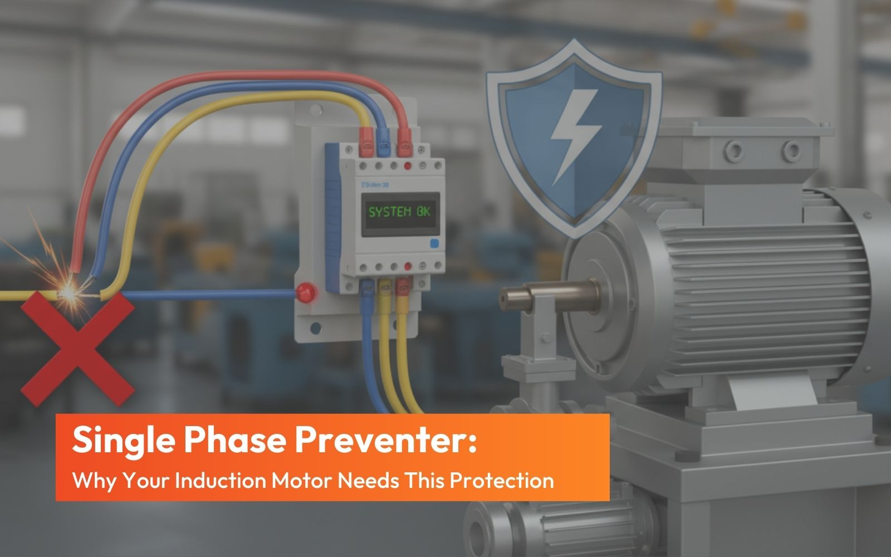

Single Phase Preventer: Why Your Induction Motor Needs This Protection

In modern industrial and commercial electrical systems, the reliability of your machinery depends entirely on the quality of your power supply. While three-phase induction motors are the workhorses of industry, they are highly vulnerable to specific power anomalies. Among the most destructive of these is the “Single Phasing” defect.
What Is Single Phasing and Why Is It Dangerous?
To understand the preventer, you must first understand the problem. A three-phase motor is designed to run with current flowing through all three phases (R, Y, and B). Single phasing occurs when one of these phases is lost while the motor is running. This loss can happen due to several reasons:
- A blown fuse in one phase.
- Loose wiring connections.
- Mechanical failure in switching contacts.
- Utility supply issues.
When a phase is lost, the motor does not simply stop. Instead, it continues to run on the remaining two phases. This causes the motor to draw excessive current in the remaining active phases sometimes up to three times the normal rate leading to rapid overheating.
Why Your Motor Needs a Single Phase Preventer
Without protection, a motor experiencing single phasing will burn out within minutes. Here is why this protection is non-negotiable:
1. Prevents Winding Insulation Failure
When a motor runs on a single phase, the current becomes severely unbalanced. This imbalance creates a “negative sequence component” in the stator. This component generates a magnetic flux that opposes the main rotation, inducing double-frequency currents in the rotor. The result is rapid heating that degrades the winding insulation, leading to short circuits and complete motor burnout.
2. Eliminates Downtime
Unexpected motor failure halts production. Replacing or rewinding a motor is costly and time-consuming. An SPP acts as a first line of defense, tripping the motor off the line the moment a phase failure is detected, preventing physical damage.
3. Handles Voltage Unbalance
It’s not just about a complete phase loss. Even a significant voltage unbalance between phases can cause the same damaging effects as single phasing. Modern preventers monitor these subtle changes.
How a Single Phase Preventer Works
A Single Phase Preventer continuously monitors the three-phase supply and disconnects the motor when fault conditions are detected.
The DTC VSP-D1 operates on the negative sequence voltage sensing principle. It detects:
- Phase failure – Complete loss of one or more phases
- Phase unbalance – Voltage differences between phases exceeding safe limits
- Phase sequence reversal – Incorrect phase order causing reverse motor rotation
When any of these conditions occur, the relay’s output contacts change state within the specified trip delay, de-energizing the motor starter and isolating the motor from the dangerous supply.
The beauty of voltage-sensing relays like the VSP-D1 is that they are independent of load. They monitor the incoming supply directly, making them suitable for motors of any horsepower or kilowatt rating.
DTC VSP-D1: Technical Specifications and Features
The DTC VSP-D1 is engineered for industrial-grade reliability. Here are its critical specifications:
Power Supply
- System voltage: 100-120 / 220-240 / 380-440 V AC ±20%
- Auxiliary voltage: 100-120 / 220-240 / 380-440 V AC ±20%
- Frequency: 50/60 Hz
- Maximum power consumption: 3 VA
Protection Settings
- Phase unbalance trip: 40V ± 6V (fixed setting)
- Phase sequence detection: Yes
- Trip time delay: 3.5 seconds ± 1.5 seconds
- Resetting mode: Automatic
Output
- Output contacts: 1 CO (Changeover)
- Contact rating: 5A @ 230V AC (resistive)
Physical Characteristics
- Weight: 320 grams
- Dimensions: 76 x 30.5 x 117.5 mm
- Mounting: 35mm DIN rail or panel mounting with 68mm center-to-center
- Enclosure material: ABS
- Operating temperature: -5°C to +60°C
- Maximum humidity: 95% RH
Indicators
- Green LED: Power ON
- Red LED: Trip condition
Key Features That Matter in Real-World Applications
1. Fixed Unbalance Setting (40V ±6V)
The VSP-D1 comes with a factory-set unbalance threshold. This eliminates guesswork during installation and ensures consistent protection across all applications. When voltage differences between phases exceed this range, the relay trips.
2. 1 CO Output Relay
The single changeover output provides flexibility in control circuit wiring. It can be configured for either normally open or normally closed operation depending on your starter requirements.
3. Automatic Reset
After a fault condition clears, the VSP-D1 automatically resets. This is particularly valuable in unattended installations or remote locations where manual reset isn’t practical.
4. Wide Operating Voltage Range
With ±20% tolerance on supply voltages, the relay handles real-world power fluctuations without nuisance tripping.
5. Compact DIN Rail Mounting
The slim 30.5mm width and standard 35mm rail mounting make integration into existing panels straightforward—whether for new installations or retrofits.
Applications: Where the DTC VSP-D1 Excels
The VSP-D1 is suitable for protecting three-phase motors across diverse industries and equipment types:
- Injection molding machines – Preventing costly downtime in plastics processing
- Valve actuator motors – Ensuring critical flow control systems remain operational
- Machine tools – Protecting precision equipment from electrical faults
- Agricultural pump starters – Safeguarding irrigation and water supply
- Hoist motor control – Maintaining safety in material handling
- 3-phase split AC machines – Protecting HVAC equipment
- Compressors and blowers – Ensuring continuous operation in industrial processes
Any application with three-phase motors benefits from single phase prevention. The VSP-D1 installs ahead of the motor starter, monitoring incoming power and providing protection regardless of motor size or load characteristics.
Installation and Wiring Considerations
The VSP-D1 connects directly to the three-phase supply lines. Its internal circuit continuously analyzes the voltage conditions. The output relay contacts are wired into the motor starter’s control circuit typically in series with the contactor coil.
When a fault occurs:
- The relay detects the abnormal condition
- The internal timer begins counting (3.5 seconds typical)
- If the fault persists, the output relay changes state
- The contactor coil de-energizes
- The motor disconnects from the supply
When supply normalizes, the relay automatically resets. This sequence prevents nuisance tripping from transient fluctuations while ensuring positive protection during sustained faults.
Why Choose DTC for Motor Protection?
DTC has established itself as a trusted name in industrial control and protection. The VSP-D1 embodies the engineering philosophy of the DTC group: reliable, precise, and built for demanding environments.
- No-contact electromagnetic structure – Solid-state sensing with no moving parts in the measurement circuit
- Long operational life – Rated for 0.5 × 10⁶ operations at full load
- Stable performance – Resistant to electromagnetic interference and harmonics
- Quick response – Protects motors before damage occurs
- Proven technology – Negative sequence sensing is the industry standard for single phasing protection
The Cost of Not Using Protection
| Scenario | Outcome |
|---|---|
| Motor rewinding cost | 30-50% of new motor price |
| Production downtime | Lost revenue per hour |
| Emergency replacement | Premium pricing + expedited shipping |
| Without SPP | Motor destroyed in minutes during single phasing |
| With VSP-D1 | Motor trips safely, minimal damage, quick restart |
Conclusion
In the landscape of electrical engineering, prevention is always cheaper than repair. The thermal and mechanical stress caused by single phasing is invisible until it’s too late. By integrating a Single Phase Preventer into your control panel, you ensure that your motors run only when the conditions are safe. At DTC, we understand the nuances of power quality. Our Single Phase Preventers are engineered for accuracy and durability, providing the precise response needed to protect your equipment without nuisance tripping.
The DTC VSP-D1 Phase Failure Relay provides reliable, automatic protection against phase failure, unbalance, and phase reversal. With fixed unbalance settings, 1 CO output, automatic reset, and compact DIN rail mounting, it integrates seamlessly into motor control panels across industries.